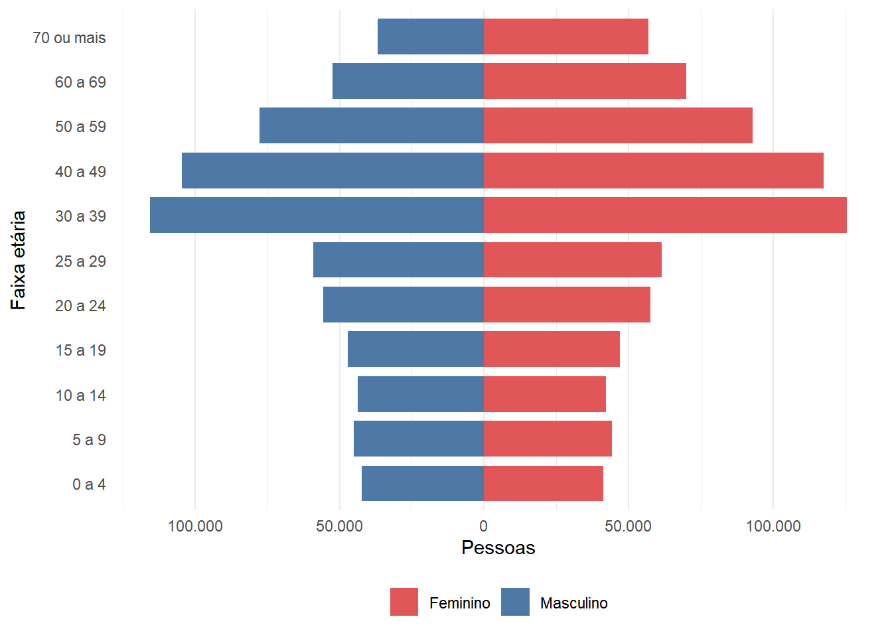
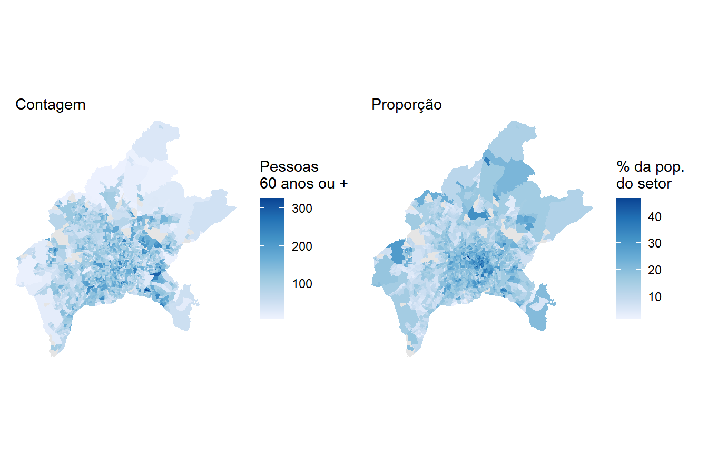
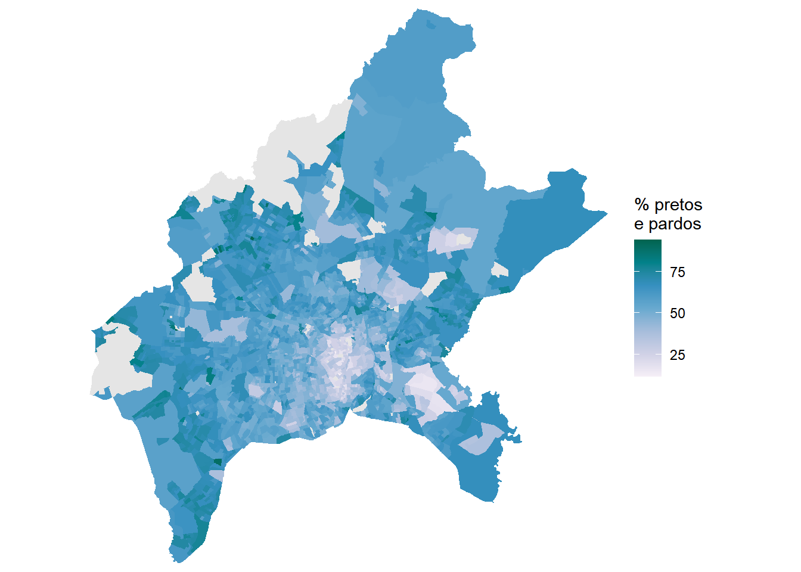
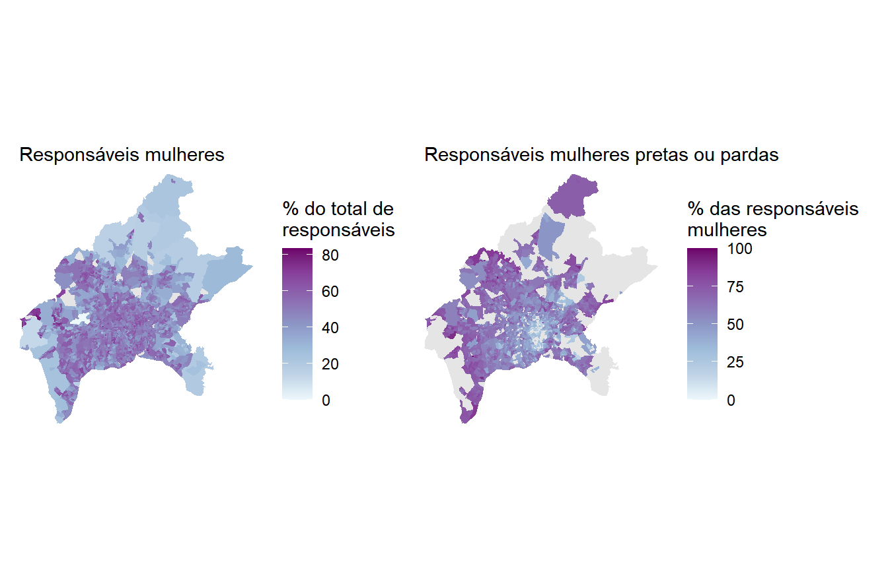
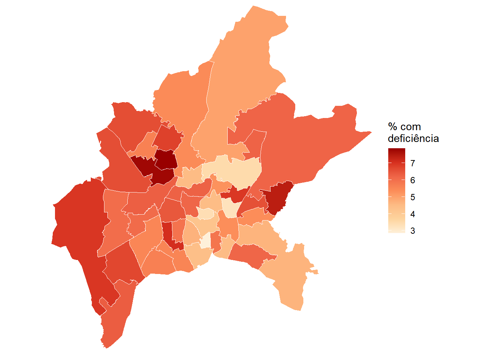
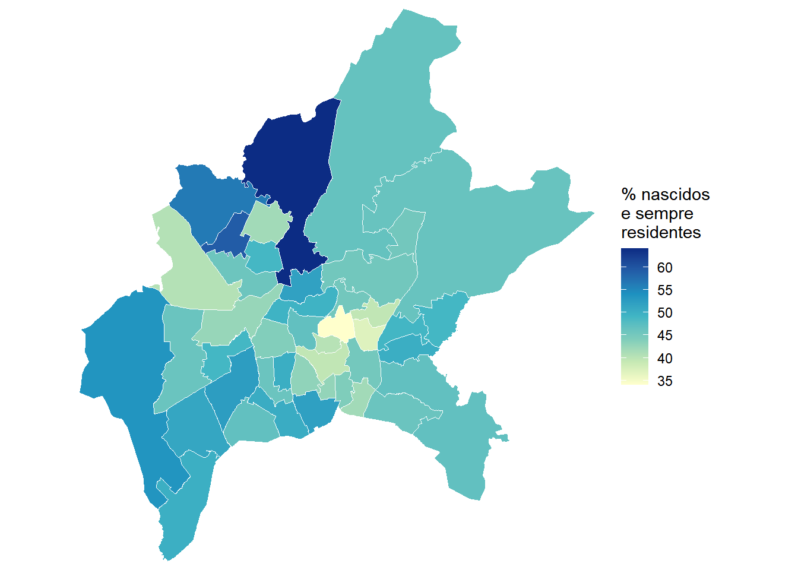
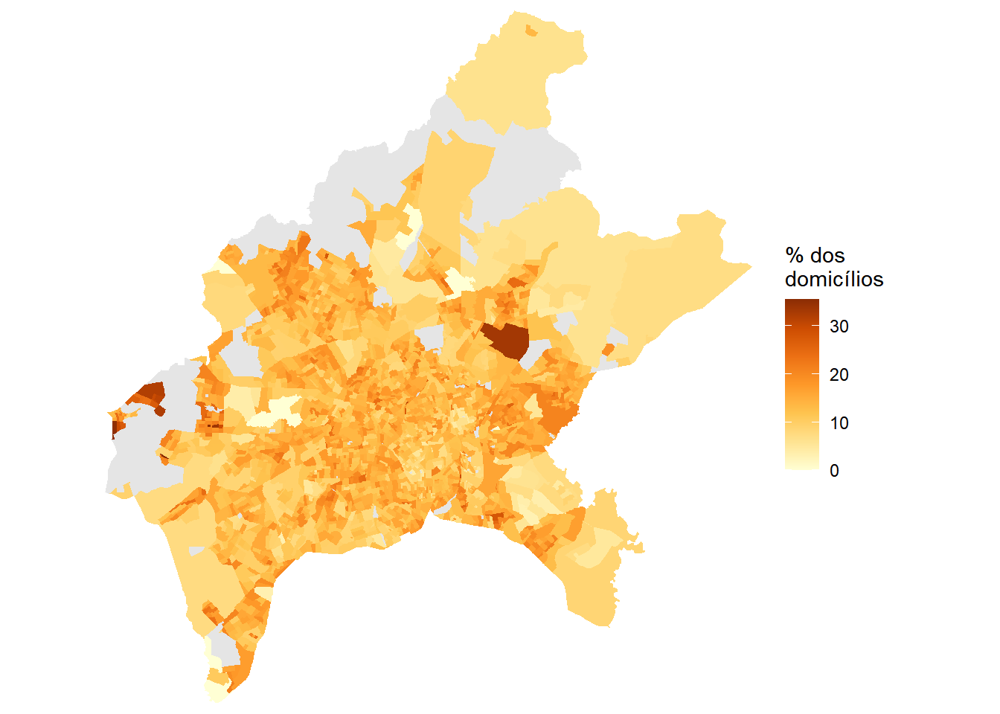
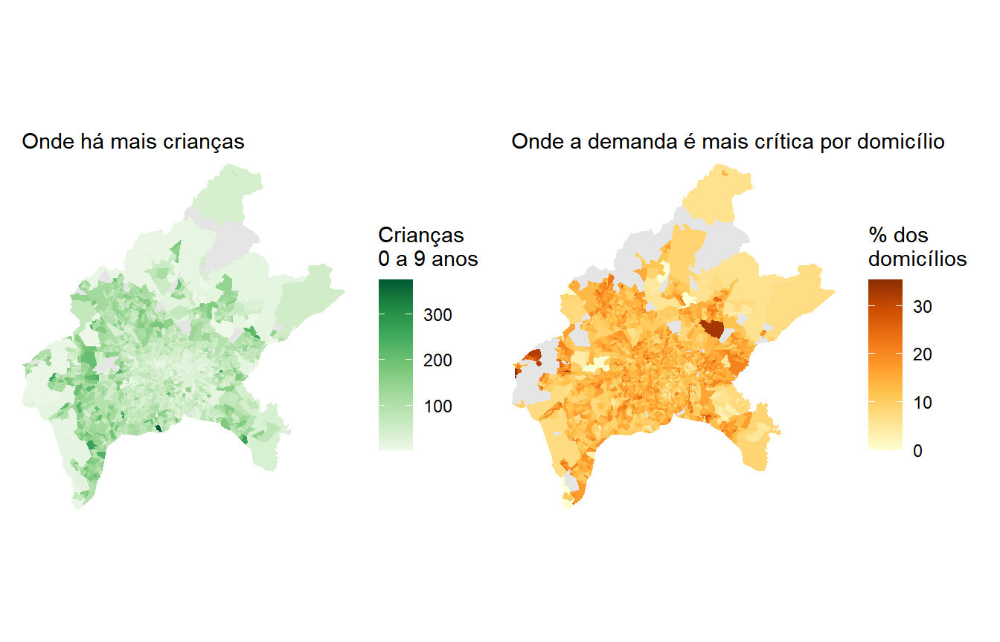
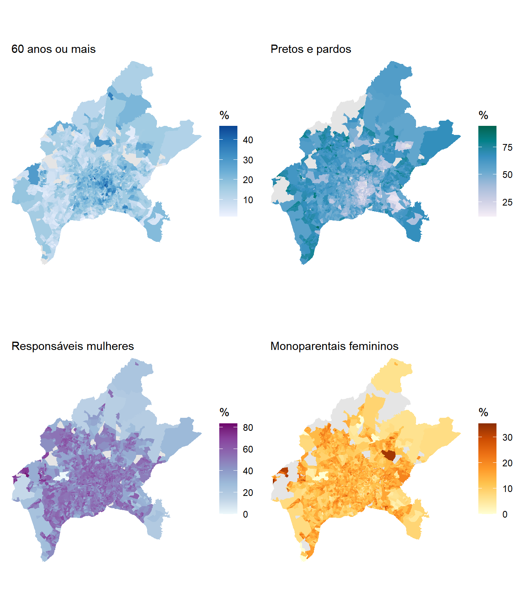

goiania <- lookup_muni(name_muni = "Goiânia", year = 2022)$code_muni
goiania[1] 5208707Toda decisão de política pública que tem endereço depende de uma pergunta anterior, que é saber onde vive o público que ela pretende alcançar. Um centro de convivência para pessoas idosas precisa estar perto de quem já parou de trabalhar e uma creche precisa estar perto de quem tem filho pequeno. Nenhuma dessas perguntas se responde com o total do município, porque o município é grande demais para caber numa decisão de localização.
O Censo Demográfico é a única fonte brasileira que responde a essas perguntas com elevada granularidade intraurbana, e faz isso para os cinco mil e poucos municípios do país ao mesmo tempo. Este capítulo mostra como transformar esse material em indicadores utilizáveis, percorrendo seis recortes temáticos: a idade, a cor ou raça, quem responde pelo domicílio, o arranjo domiciliar, a deficiência e a naturalidade.
Esses seis recortes não vêm todos do mesmo lugar, e reconhecer isso é a segunda lição do capítulo. Os quatro primeiros estão nos agregados por setor censitário, que nascem do Questionário Básico e chegam com o maior detalhe espacial que o Censo oferece. Os dois últimos não existem nos agregados, porque o Questionário Básico não os investiga. Para alcançá-los é preciso recorrer aos microdados da amostra, que são divulgados por área de ponderação. Trocar de fonte significa, portanto, trocar de escala, e o capítulo percorre as duas na ordem em que elas se impõem, primeiro o que se pode fazer com o maior detalhe territorial disponível, depois o que só a amostra permite perguntar.
Entre os recortes dos agregados, o do arranjo domiciliar é o menos explorado e talvez o mais interessante. Os agregados informam não apenas quantas pessoas moram em cada setor, mas também como elas se organizam dentro do domicílio, quem é a pessoa responsável e se há cônjuge e filhos. É a partir daí que se chega a indicadores como o de domicílios monoparentais, que dificilmente aparecem em relatórios técnicos e que mudam bastante a leitura de um território.
O município escolhido para o capítulo é Goiânia (GO). Os indicadores dos agregados são calculados para os setores censitários do município no Censo 2022, os da amostra para as áreas de ponderação do Censo 2010, e sempre que a comparação entre as duas edições for possível ela é feita.
Antes de qualquer cálculo, vale reter uma advertência. Nenhum dos indicadores deste capítulo é uma contagem bruta. Todos são proporções, e a escolha de qual total vai no denominador é a decisão que mais afeta o resultado. Essa escolha reaparecerá em cada seção, e em uma delas ela muda de uma linha para a outra.
Começamos pelos agregados, que sustentam a maior parte do capítulo. Os indicadores construídos até a Seção 12.6 vêm de três dos arquivos temáticos apresentados na Tabela 7.2 do Capítulo 7. Do arquivo Básico vem a população total e a identificação geográfica. Do arquivo Pessoas vêm os blocos de Demografia, Cor ou Raça e Parentesco. Do arquivo Domicílio vem o total de domicílios particulares permanentes ocupados e a contagem de crianças. Os microdados da amostra entram mais adiante, na Seção 12.7, com uma preparação própria.
O primeiro passo é obter o código do município. Como visto no Capítulo 6, a função lookup_muni() do geobr faz essa busca pelo nome, e a partir da versão 2.0.0 do pacote ela exige que o ano de referência seja informado.
goiania <- lookup_muni(name_muni = "Goiânia", year = 2022)$code_muni
goiania[1] 5208707Com o código em mãos, lemos os três arquivos. Em todos eles o filtro por município vem antes do collect(), para que o Arrow leia do disco apenas os setores de Goiânia, conforme discutido na Seção 7.4.1. As variáveis já são selecionadas na leitura, e não depois, pelo mesmo motivo.
sc_basico <- read_tracts(dataset = "Basico", year = 2022) |>
filter(code_muni == goiania) |>
select(code_tract, name_subdistrict, area_km2, V0001) |>
collect()
nrow(sc_basico)[1] 2310Do arquivo Pessoas vêm quase todas as variáveis do capítulo. São dezoito colunas, distribuídas pelos três blocos temáticos que nos interessam. A Tabela 12.1 descreve cada uma delas.
| Arquivo | Bloco | Código original | Nome atribuído | Descrição |
|---|---|---|---|---|
| Básico | — | V0001 |
pop |
População total residente |
| Pessoas | Demografia | demografia_V01031 |
pess_0_4 |
Pessoas de 0 a 4 anos |
| Pessoas | Demografia | demografia_V01040 |
id_60_69 |
Pessoas de 60 a 69 anos |
| Pessoas | Demografia | demografia_V01041 |
id_70m |
Pessoas de 70 anos ou mais |
| Pessoas | Cor ou Raça | raca_V01317 |
branca |
Pessoas de cor ou raça branca |
| Pessoas | Cor ou Raça | raca_V01318 |
preta |
Pessoas de cor ou raça preta |
| Pessoas | Cor ou Raça | raca_V01319 |
amarela |
Pessoas de cor ou raça amarela |
| Pessoas | Cor ou Raça | raca_V01320 |
parda |
Pessoas de cor ou raça parda |
| Pessoas | Cor ou Raça | raca_V01321 |
indigena |
Pessoas de cor ou raça indígena |
| Pessoas | Cor ou Raça | raca_V01340 |
resp_f_preta |
Responsável preta, sexo feminino |
| Pessoas | Cor ou Raça | raca_V01344 |
resp_f_parda |
Responsável parda, sexo feminino |
| Pessoas | Parentesco | parentesco_V01062 |
resp_m |
Pessoa responsável, sexo masculino |
| Pessoas | Parentesco | parentesco_V01063 |
resp_f |
Pessoa responsável, sexo feminino |
| Pessoas | Parentesco | parentesco_V01191 |
arr_casal |
Responsável e cônjuge sem filhos |
| Pessoas | Parentesco | parentesco_V01192 |
arr_ambos |
Responsável e cônjuge com filho de ambos |
| Pessoas | Parentesco | parentesco_V01193 |
arr_um |
Responsável e cônjuge com filho de um deles |
| Pessoas | Parentesco | parentesco_V01194 |
arr_mono |
Responsável sem cônjuge com filhos ou enteados |
| Pessoas | Parentesco | parentesco_V01195 |
arr_outros |
Outros tipos de composição |
| Pessoas | Parentesco | parentesco_V01203 |
mono_m |
Monoparental, responsável masculino |
| Pessoas | Parentesco | parentesco_V01204 |
mono_f |
Monoparental, responsável feminino |
| Domicílio | Parte 1 | domicilio01_V00001 |
dppo |
Domicílios particulares permanentes ocupados |
| Domicílio | Parte 1 | domicilio01_V00008 |
cri_0_9 |
Crianças de 0 a 9 anos em domicílios permanentes |
A leitura do arquivo Pessoas segue a mesma lógica da anterior. Repare que os códigos não guardam relação semântica com o conteúdo, o que torna a consulta ao dicionário obrigatória e a atribuição de nomes legíveis quase indispensável.
sc_pessoas <- read_tracts(dataset = "Pessoas", year = 2022) |>
filter(code_muni == goiania) |>
select(code_tract,
demografia_V01031, demografia_V01040, demografia_V01041,
raca_V01317, raca_V01318, raca_V01319, raca_V01320, raca_V01321,
raca_V01340, raca_V01344,
parentesco_V01062, parentesco_V01063,
parentesco_V01191, parentesco_V01192, parentesco_V01193,
parentesco_V01194, parentesco_V01195,
parentesco_V01203, parentesco_V01204) |>
collect()Do arquivo Domicílio vêm apenas duas colunas, o total de domicílios particulares permanentes ocupados, que servirá de denominador para os indicadores de arranjo domiciliar, e a contagem de crianças de zero a nove anos.
sc_domicilio <- read_tracts(dataset = "Domicilio", year = 2022) |>
filter(code_muni == goiania) |>
select(code_tract, domicilio01_V00001, domicilio01_V00008) |>
collect()Com os três objetos em memória, resta juntá-los pelo código do setor e atribuir os nomes da Tabela 12.1. O resultado é uma única tabela com uma linha por setor censitário, que servirá de base para todo o capítulo.
goiania_sc <- sc_basico |>
left_join(sc_pessoas, by = "code_tract") |>
left_join(sc_domicilio, by = "code_tract") |>
rename(
pop = V0001,
pess_0_4 = demografia_V01031,
id_60_69 = demografia_V01040,
id_70m = demografia_V01041,
branca = raca_V01317,
preta = raca_V01318,
amarela = raca_V01319,
parda = raca_V01320,
indigena = raca_V01321,
resp_f_preta = raca_V01340,
resp_f_parda = raca_V01344,
resp_m = parentesco_V01062,
resp_f = parentesco_V01063,
arr_casal = parentesco_V01191,
arr_ambos = parentesco_V01192,
arr_um = parentesco_V01193,
arr_mono = parentesco_V01194,
arr_outros = parentesco_V01195,
mono_m = parentesco_V01203,
mono_f = parentesco_V01204,
dppo = domicilio01_V00001,
cri_0_9 = domicilio01_V00008
)
dim(goiania_sc)[1] 2310 25Por fim, precisamos da geometria dos setores para produzir os mapas. A malha vem do geobr pela função read_census_tract(), já utilizada no Capítulo 7, e é unida à tabela de indicadores pela mesma coluna code_tract.
goiania_geo <- read_census_tract(
code_tract = goiania,
year = 2022,
simplified = FALSE
) |>
select(code_tract) |>
left_join(goiania_sc, by = "code_tract")Com a base montada, podemos começar pelo recorte que mais mudou no Brasil das últimas duas décadas.
A distribuição da população por idade é o retrato mais imediato que um censo oferece, e a forma clássica de apresentá-la é a pirâmide etária, um gráfico de barras horizontais em que cada faixa aparece duas vezes, uma para cada sexo. O bloco de Demografia do arquivo Pessoas traz exatamente o material necessário, com onze faixas etárias repetidas para o sexo masculino e para o feminino.
As vinte e duas variáveis são consecutivas no arquivo, o que permite selecioná-las por intervalo com o operador :, sem precisar escrever cada nome.
sc_idade <- read_tracts(dataset = "Pessoas", year = 2022) |>
filter(code_muni == goiania) |>
select(code_tract, demografia_V01009:demografia_V01030) |>
collect()Os códigos, sozinhos, não dizem qual faixa nem qual sexo representam. Precisamos de uma tabela de correspondência entre o código e o seu significado. Como as onze faixas se repetem na mesma ordem para os dois sexos, a função rep() evita digitar tudo duas vezes.
faixas_etarias <- c("0 a 4", "5 a 9", "10 a 14", "15 a 19", "20 a 24",
"25 a 29", "30 a 39", "40 a 49", "50 a 59",
"60 a 69", "70 ou mais")
dic_idade <- tibble(
variavel = paste0("demografia_V0", 1009:1030),
sexo = rep(c("Masculino", "Feminino"), each = 11),
faixa = rep(faixas_etarias, times = 2)
)
head(dic_idade)# A tibble: 6 × 3
variavel sexo faixa
<chr> <chr> <chr>
1 demografia_V01009 Masculino 0 a 4
2 demografia_V01010 Masculino 5 a 9
3 demografia_V01011 Masculino 10 a 14
4 demografia_V01012 Masculino 15 a 19
5 demografia_V01013 Masculino 20 a 24
6 demografia_V01014 Masculino 25 a 29Agora somamos cada coluna ao longo de todos os setores, obtendo o total municipal de cada combinação de sexo e faixa. O resultado dessa soma é uma tabela de uma linha e vinte e duas colunas, formato que o ggplot2 não consegue mapear diretamente. É preciso convertê-la para o formato longo, com uma linha por variável, e é isso que a função pivot_longer() faz.
piramide <- sc_idade |>
summarise(across(all_of(dic_idade$variavel), \(x) sum(x, na.rm = TRUE))) |>
pivot_longer(
cols = all_of(dic_idade$variavel),
names_to = "variavel",
values_to = "pessoas"
) |>
left_join(dic_idade, by = "variavel") |>
mutate(
faixa = factor(faixa, levels = faixas_etarias),
pessoas = ifelse(sexo == "Masculino", -pessoas, pessoas)
)
head(piramide)# A tibble: 6 × 4
variavel pessoas sexo faixa
<chr> <dbl> <chr> <fct>
1 demografia_V01009 -42338 Masculino 0 a 4
2 demografia_V01010 -45168 Masculino 5 a 9
3 demografia_V01011 -43679 Masculino 10 a 14
4 demografia_V01012 -47151 Masculino 15 a 19
5 demografia_V01013 -55624 Masculino 20 a 24
6 demografia_V01014 -58971 Masculino 25 a 29pivot_longer(), de tabela larga para tabela longa
Uma mesma informação pode ser guardada de duas formas. No formato largo, cada variável ocupa uma coluna, que é como os Agregados chegam até nós, com uma coluna por combinação de sexo e faixa etária. No formato longo, cada linha guarda uma única observação, com uma coluna dizendo qual variável é e outra dizendo qual o valor.
A função pivot_longer(), do pacote tidyr, converte do largo para o longo. Seus três argumentos principais são cols, que indica quais colunas devem ser empilhadas, names_to, que dá o nome da coluna que guardará os nomes originais, e values_to, que dá o nome da coluna que guardará os valores.
A conversão é necessária porque o ggplot2 mapeia colunas para elementos visuais. Para colorir as barras por sexo, o sexo precisa estar em uma coluna, e não espalhado por vinte e duas colunas diferentes. Sempre que um gráfico exigir uma variável que hoje está codificada nos nomes das colunas, o caminho passa pelo pivot_longer().
A operação inversa existe e se chama pivot_wider(), útil quando se quer transformar categorias de uma coluna em colunas próprias, como ao montar uma tabela de dupla entrada.
Duas escolhas no código acima merecem explicação. A conversão de faixa para fator com levels = faixas_etarias garante que as barras apareçam em ordem etária, e não em ordem alfabética, que colocaria “10 a 14” antes de “5 a 9”. E os valores masculinos são multiplicados por menos um, o que empurra essas barras para a esquerda do eixo e produz o formato característico da pirâmide.
ggplot(piramide, aes(x = faixa, y = pessoas, fill = sexo)) +
geom_col(width = 0.8) +
coord_flip() +
scale_y_continuous(
labels = \(x) scales::label_number(big.mark = ".", decimal.mark = ",")(abs(x))
) +
scale_fill_manual(values = c("Masculino" = "#4E79A7", "Feminino" = "#E15759")) +
labs(x = "Faixa etária", y = "Pessoas", fill = NULL) +
theme_minimal() +
theme(legend.position = "bottom", panel.grid.major.y = element_blank())
A pirâmide de Goiânia já não é uma pirâmide. A base está mais estreita que o corpo, com as faixas de 0 a 4 e de 5 a 9 anos menores que as de 30 a 39 e 40 a 49. É o desenho típico de uma população que passou pela transição demográfica, com queda da fecundidade e aumento da expectativa de vida.
Para levar essa observação ao território, precisamos de um indicador por setor. O corte usual é o de 60 anos, limiar adotado pela Lei nº 10.741, de 2003, que institui o Estatuto da Pessoa Idosa e assegura direitos às pessoas com idade igual ou superior a essa (Brasil, 2003). Ele corresponde exatamente à soma das duas últimas faixas do bloco de Demografia.
goiania_geo <- goiania_geo |>
mutate(
idosos = id_60_69 + id_70m,
perc_idosos = 100 * idosos / pop
)
summary(goiania_geo$perc_idosos) Min. 1st Qu. Median Mean 3rd Qu. Max. NAs
1.446 10.616 15.961 16.136 20.209 46.875 46 O indicador vai de pouco mais de 1% a quase 47% dos residentes, com mediana em torno de 16%. Essa amplitude é o primeiro sinal de que a distribuição da população idosa dentro da cidade está longe de ser homogênea. Os dois mapas a seguir mostram o mesmo fenômeno de duas formas, primeiro pela contagem de pessoas com 60 anos ou mais em cada setor, depois pela proporção que elas representam na população do setor.
mapa_idosos_cont <- ggplot(goiania_geo) +
geom_sf(aes(fill = idosos), color = NA) +
scale_fill_distiller(palette = "Blues", direction = 1,
name = "Pessoas\n60 anos ou +",
na.value = "gray90") +
coord_sf(expand = FALSE) +
labs(subtitle = "Contagem") +
theme_minimal() +
theme(axis.text = element_blank(), axis.ticks = element_blank(),
panel.grid = element_blank())
mapa_idosos_perc <- ggplot(goiania_geo) +
geom_sf(aes(fill = perc_idosos), color = NA) +
scale_fill_distiller(palette = "Blues", direction = 1,
name = "% da pop.\ndo setor",
na.value = "gray90") +
coord_sf(expand = FALSE) +
labs(subtitle = "Proporção") +
theme_minimal() +
theme(axis.text = element_blank(), axis.ticks = element_blank(),
panel.grid = element_blank())
mapa_idosos_cont + mapa_idosos_perc
Os dois mapas não descrevem a mesma cidade. O da esquerda destaca os setores mais populosos, porque um setor com muita gente tende a ter muitos idosos mesmo que a proporção seja baixa. O da direita destaca os bairros consolidados, onde a população envelheceu no lugar e os filhos já saíram de casa.
A divergência pode ser medida. Se tomarmos os cem setores com mais pessoas idosas em número absoluto e os cem setores com maior proporção de idosos, apenas 28 aparecem nas duas listas.
top_contagem <- goiania_geo |>
st_drop_geometry() |>
filter(!is.na(perc_idosos)) |>
slice_max(idosos, n = 100) |>
pull(code_tract)
top_proporcao <- goiania_geo |>
st_drop_geometry() |>
filter(!is.na(perc_idosos)) |>
slice_max(perc_idosos, n = 100) |>
pull(code_tract)
length(intersect(top_contagem, top_proporcao))[1] 28Setenta e dois por cento de discordância entre as duas listas é muito, e a consequência prática é direta. Uma política que precise dimensionar a demanda por atendimento domiciliar deve olhar a contagem, porque o que interessa é quantas pessoas serão atendidas. Uma política que precise decidir onde instalar um centro de convivência deve olhar a proporção, porque o que interessa é a densidade do público no entorno do equipamento. Escolher o mapa errado leva o equipamento para o lugar errado.
Agregar os setores em recortes maiores ajuda a nomear as áreas. Goiânia não possui a divisão por bairros nos Agregados, e a coluna name_neighborhood vem inteiramente vazia para o município, situação que o leitor deve sempre verificar antes de contar com esse recorte. O nível imediatamente disponível acima do setor é o subdistrito.
Ao agregar, somamos cada variável original separadamente, em vez de somar o indicador já calculado por setor. A diferença importa. Quando uma das parcelas está ausente em um setor, a soma id_60_69 + id_70m daquele setor também fica ausente, e somar essa coluna descartaria a contribuição inteira do setor enquanto a população dele continuaria no denominador. Somando cada parcela por conta própria, aproveitamos tudo que foi divulgado.
idosos_sub <- goiania_geo |>
st_drop_geometry() |>
filter(!is.na(name_subdistrict)) |>
group_by(name_subdistrict) |>
summarise(
pop = sum(pop, na.rm = TRUE),
idosos = sum(id_60_69, na.rm = TRUE) + sum(id_70m, na.rm = TRUE),
dppo = sum(dppo, na.rm = TRUE)
) |>
filter(dppo >= 1000) |>
mutate(perc_idosos = 100 * idosos / pop)
bind_rows(
idosos_sub |> slice_max(perc_idosos, n = 5),
idosos_sub |> slice_min(perc_idosos, n = 5)
) |>
select(name_subdistrict, pop, perc_idosos) |>
knitr::kable(
col.names = c("Subdistrito", "População", "% com 60 anos ou mais"),
digits = 1,
format.args = list(big.mark = ".", decimal.mark = ",")
)| Subdistrito | População | % com 60 anos ou mais |
|---|---|---|
| U.T.P. Oeste | 24.939 | 31,2 |
| U.T.P. Aeroporto | 8.409 | 27,7 |
| U.T.P. Sul | 9.084 | 27,5 |
| U.T.P. Central | 17.728 | 27,2 |
| U.T.P. Nova Suiça | 7.672 | 26,6 |
| U.T.P. Parque Bom Jesus | 15.413 | 6,9 |
| U.T.P. Zona Rural | 67.570 | 8,5 |
| U.T.P. Vila Rizzo | 22.272 | 8,6 |
| U.T.P. Parque Santa Rita | 34.620 | 8,9 |
| U.T.P. Baliza-Itaipu | 47.015 | 9,0 |
O contraste é de mais de quatro vezes entre o subdistrito mais envelhecido e o mais jovem. Guardemos os nomes que aparecem no topo da tabela, porque eles voltarão a aparecer na próxima seção, e com um sinal invertido.
O Censo classifica a cor ou raça em cinco categorias, branca, preta, amarela, parda e indígena, todas por autodeclaração. Em análises de desigualdade, é frequente somar as categorias preta e parda em um único grupo, procedimento que o próprio IBGE adota na publicação Desigualdades Sociais por Cor ou Raça no Brasil, onde o grupo aparece sob a denominação “pretos ou pardos” (Instituto Brasileiro de Geografia e Estatística, 2022). Comecemos pelo quadro geral do município.
composicao_raca <- goiania_sc |>
summarise(
Branca = sum(branca, na.rm = TRUE),
Preta = sum(preta, na.rm = TRUE),
Amarela = sum(amarela, na.rm = TRUE),
Parda = sum(parda, na.rm = TRUE),
Indígena = sum(indigena, na.rm = TRUE)
) |>
pivot_longer(everything(), names_to = "cor_raca", values_to = "pessoas") |>
mutate(perc = 100 * pessoas / sum(pessoas))
composicao_raca |>
knitr::kable(
col.names = c("Cor ou raça", "Pessoas", "% do total"),
digits = 1,
format.args = list(big.mark = ".", decimal.mark = ",")
)| Cor ou raça | Pessoas | % do total |
|---|---|---|
| Branca | 626.649 | 43,7 |
| Preta | 113.975 | 7,9 |
| Amarela | 4.125 | 0,3 |
| Parda | 689.331 | 48,0 |
| Indígena | 1.097 | 0,1 |
Pretos e pardos somados respondem por pouco mais da metade dos residentes de Goiânia. O indicador por setor é construído da mesma forma que o anterior, somando as duas categorias e dividindo pela população total do setor.
goiania_geo <- goiania_geo |>
mutate(
pretos_pardos = preta + parda,
perc_pretos_pardos = 100 * pretos_pardos / pop
)
summary(goiania_geo$perc_pretos_pardos) Min. 1st Qu. Median Mean 3rd Qu. Max. NAs
11.42 46.85 58.63 55.36 65.97 94.20 47 O mapa a seguir mostra a distribuição desse indicador. Diferentemente do caso anterior, aqui não faz sentido apresentar a contagem, porque a pergunta é sobre composição da população e não sobre volume de atendimento.
ggplot(goiania_geo) +
geom_sf(aes(fill = perc_pretos_pardos), color = NA) +
scale_fill_distiller(palette = "PuBuGn", direction = 1,
name = "% pretos\ne pardos",
na.value = "gray90") +
coord_sf(expand = FALSE) +
theme_minimal() +
theme(axis.text = element_blank(), axis.ticks = element_blank(),
panel.grid = element_blank())
O padrão espacial é nítido, com uma mancha clara concentrada e contínua, cercada por valores altos em todas as direções. Repetindo a agregação por subdistrito, o contraste fica explícito.
raca_sub <- goiania_geo |>
st_drop_geometry() |>
filter(!is.na(name_subdistrict)) |>
group_by(name_subdistrict) |>
summarise(
pop = sum(pop, na.rm = TRUE),
pretos_pardos = sum(preta, na.rm = TRUE) + sum(parda, na.rm = TRUE),
dppo = sum(dppo, na.rm = TRUE)
) |>
filter(dppo >= 1000) |>
mutate(perc_pretos_pardos = 100 * pretos_pardos / pop)
bind_rows(
raca_sub |> slice_max(perc_pretos_pardos, n = 5),
raca_sub |> slice_min(perc_pretos_pardos, n = 5)
) |>
select(name_subdistrict, pop, perc_pretos_pardos) |>
knitr::kable(
col.names = c("Subdistrito", "População", "% pretos e pardos"),
digits = 1,
format.args = list(big.mark = ".", decimal.mark = ",")
)| Subdistrito | População | % pretos e pardos |
|---|---|---|
| U.T.P. São Domingos | 23.563 | 71,9 |
| U.T.P. Jardim Primavera | 7.376 | 70,6 |
| U.T.P. Baliza-Itaipu | 47.015 | 69,7 |
| U.T.P. Zona Rural | 67.570 | 69,6 |
| U.T.P. Vila Pedroso | 19.658 | 69,5 |
| U.T.P. Oeste | 24.939 | 24,2 |
| U.T.P. Autódromo ou Parque Lozandes | 10.699 | 26,4 |
| U.T.P. Marista | 11.173 | 26,5 |
| U.T.P. Nova Suiça | 7.672 | 26,6 |
| U.T.P. Bueno | 53.221 | 27,4 |
A comparação entre esta tabela e a da seção anterior é reveladora. Os subdistritos que aparecem entre os mais envelhecidos são, em boa parte, os mesmos que aparecem entre os de menor proporção de população preta e parda. Envelhecimento e composição por cor ou raça não são fenômenos independentes no território brasileiro, porque ambos guardam relação com a renda e com a trajetória histórica de ocupação da cidade. Descrever essa coincidência é o que os dados permitem. Explicá-la exige um trabalho de interpretação que os agregados, sozinhos, não sustentam.
Até aqui, todos os indicadores tiveram a população total do setor no denominador. Esta seção muda de unidade e passa a falar de domicílios, ou mais precisamente das pessoas responsáveis por eles. Cada domicílio tem exatamente uma pessoa responsável, de modo que contar responsáveis é uma outra forma de contar domicílios.
O bloco de Parentesco traz a pessoa responsável desagregada por sexo, nas variáveis resp_m e resp_f. O total de responsáveis é a soma das duas.
goiania_geo <- goiania_geo |>
mutate(
resp_total = resp_m + resp_f,
perc_resp_f = 100 * resp_f / resp_total
)
goiania_geo |>
st_drop_geometry() |>
summarise(
responsaveis = sum(resp_m, na.rm = TRUE) + sum(resp_f, na.rm = TRUE),
resp_femininas = sum(resp_f, na.rm = TRUE)
) |>
mutate(perc_femininas = 100 * resp_femininas / responsaveis)# A tibble: 1 × 3
responsaveis resp_femininas perc_femininas
<dbl> <dbl> <dbl>
1 549551 275035 50.0Metade dos domicílios de Goiânia é chefiada por uma mulher. O segundo indicador desta seção pergunta outra coisa, que é qual a proporção dessas responsáveis mulheres que são pretas ou pardas. E aqui está o ponto metodológico mais importante do capítulo.
O numerador é a soma de resp_f_preta e resp_f_parda, que já vêm cruzadas por sexo no arquivo. O denominador não é o total de responsáveis, nem o total de domicílios, e sim o total de responsáveis mulheres. Trocar esse denominador não produz um resultado ligeiramente diferente, produz um indicador que responde a outra pergunta.
goiania_geo <- goiania_geo |>
mutate(
resp_f_negra = resp_f_preta + resp_f_parda,
perc_resp_f_negra = 100 * resp_f_negra / resp_f
)
goiania_geo |>
st_drop_geometry() |>
summarise(
resp_f_negra = sum(resp_f_preta, na.rm = TRUE) + sum(resp_f_parda, na.rm = TRUE),
resp_f = sum(resp_f, na.rm = TRUE),
resp_total = sum(resp_m, na.rm = TRUE) + sum(resp_f, na.rm = TRUE)
) |>
mutate(
sobre_resp_femininas = 100 * resp_f_negra / resp_f,
sobre_resp_totais = 100 * resp_f_negra / resp_total
)# A tibble: 1 × 5
resp_f_negra resp_f resp_total sobre_resp_femininas sobre_resp_totais
<dbl> <dbl> <dbl> <dbl> <dbl>
1 155228 275035 549551 56.4 28.2As duas contas dão respostas legítimas para perguntas diferentes. A primeira diz que, entre as mulheres que respondem pelo domicílio em Goiânia, cerca de 56% são pretas ou pardas. A segunda diz que cerca de 28% de todos os domicílios do município são chefiados por mulheres pretas ou pardas. A primeira descreve a composição de um grupo, a segunda descreve a incidência de um arranjo. Um relatório que apresente uma delas com a legenda da outra estará simplesmente errado, e é por isso que numerador e denominador precisam ser sempre declarados juntos.
Os dois mapas a seguir tornam a diferença visível. Repare que as legendas trazem o denominador escrito, e não apenas o numerador.
mapa_resp_f <- ggplot(goiania_geo) +
geom_sf(aes(fill = perc_resp_f), color = NA) +
scale_fill_distiller(palette = "BuPu", direction = 1,
name = "% do total de\nresponsáveis",
na.value = "gray90") +
coord_sf(expand = FALSE) +
labs(subtitle = "Responsáveis mulheres") +
theme_minimal() +
theme(axis.text = element_blank(), axis.ticks = element_blank(),
panel.grid = element_blank())
mapa_resp_negra <- ggplot(goiania_geo) +
geom_sf(aes(fill = perc_resp_f_negra), color = NA) +
scale_fill_distiller(palette = "BuPu", direction = 1,
name = "% das responsáveis\nmulheres",
na.value = "gray90") +
coord_sf(expand = FALSE) +
labs(subtitle = "Responsáveis mulheres pretas ou pardas") +
theme_minimal() +
theme(axis.text = element_blank(), axis.ticks = element_blank(),
panel.grid = element_blank())
mapa_resp_f + mapa_resp_negra
O mapa da esquerda é relativamente uniforme, com a chefia feminina distribuída por toda a cidade. O da direita reproduz de perto o mapa de cor ou raça da seção anterior, o que era esperado, já que a composição das responsáveis acompanha a composição da população do setor.
Os três indicadores construídos até aqui existem também no Censo 2010, o que permite medir a direção e a intensidade da mudança. A comparação exige um cuidado que o Capítulo 9 já discutiu a propósito da Grade Estatística. A malha de setores censitários foi inteiramente redesenhada entre as duas edições, e Goiânia passou de 1.629 setores em 2010 para 2.310 em 2022. Comparar setor a setor é impossível, mas comparar totais municipais é perfeitamente legítimo, porque o município é o mesmo.
A estrutura dos arquivos de 2010 é bastante diferente da de 2022. O arquivo de pessoas chama-se Pessoa, no singular, e organiza a cor ou raça no bloco pessoa03 e a idade, ano a ano, no bloco pessoa13. Os responsáveis estão em um arquivo próprio, o Responsavel, separados em dois blocos, um para mulheres e outro para o total e os homens.
Como a idade em 2010 vem detalhada ano a ano, precisamos somar as colunas correspondentes a 60 anos ou mais. No bloco pessoa13, a variável V034 corresponde a 11 meses de idade e a V035 a um ano completo, de modo que a variável de idade \(i\) é V0 seguido de \(i + 34\). Os 60 anos ou mais vão, portanto, de pessoa13_V094 até pessoa13_V134, que é a última. A função num_range() gera essa sequência de nomes.
pessoa_2010 <- read_tracts(dataset = "Pessoa", year = 2010) |>
filter(code_muni == goiania) |>
select(code_tract,
pessoa03_V001, pessoa03_V002, pessoa03_V003, pessoa03_V005,
num_range("pessoa13_V", 94:134, width = 3)) |>
collect()
resp_2010 <- read_tracts(dataset = "Responsavel", year = 2010) |>
filter(code_muni == goiania) |>
select(code_tract, responsavel01_V001, responsavel02_V001) |>
collect()
nrow(pessoa_2010)[1] 1629num_range() e a armadilha do width
A função num_range(), do pacote tidyselect, seleciona colunas cujo nome combina um prefixo fixo com uma sequência numérica. A chamada num_range("pessoa13_V", 94:134) parece resolver o problema, mas gera os nomes pessoa13_V94, pessoa13_V95 e assim por diante, sem os zeros à esquerda. Como as colunas do arquivo se chamam pessoa13_V094, nenhuma das seis primeiras seria encontrada.
O detalhe é traiçoeiro porque a seleção não produz erro. Colunas que não existem são simplesmente ignoradas, e o resultado é uma soma silenciosamente incompleta, que neste caso deixaria de fora justamente as pessoas de 60 a 65 anos.
O argumento width resolve, preenchendo os números com zeros à esquerda até o comprimento indicado. Com width = 3, a sequência gerada passa a ser pessoa13_V094 até pessoa13_V134.
A lição é mais geral que a função. Sempre que uma seleção por padrão devolver menos colunas do que o esperado, vale conferir o resultado com ncol() antes de seguir adiante.
Com os dois arquivos em memória, calculamos os três indicadores de 2010 e os colocamos ao lado dos de 2022. Todas as somas são feitas variável a variável, pelo motivo discutido na Seção 12.3.
pop_2010 <- sum(pessoa_2010$pessoa03_V001, na.rm = TRUE)
idade_2010 <- pessoa_2010 |>
select(num_range("pessoa13_V", 94:134, width = 3)) |>
sum(na.rm = TRUE)
pp_2010 <- sum(pessoa_2010$pessoa03_V003, na.rm = TRUE) +
sum(pessoa_2010$pessoa03_V005, na.rm = TRUE)
pop_2022 <- sum(goiania_sc$pop, na.rm = TRUE)
idade_2022 <- sum(goiania_sc$id_60_69, na.rm = TRUE) +
sum(goiania_sc$id_70m, na.rm = TRUE)
pp_2022 <- sum(goiania_sc$preta, na.rm = TRUE) +
sum(goiania_sc$parda, na.rm = TRUE)
comparativo <- tibble(
Indicador = c("% com 60 anos ou mais",
"% pretos e pardos",
"% de responsáveis mulheres"),
`2010` = c(
100 * idade_2010 / pop_2010,
100 * pp_2010 / pop_2010,
100 * sum(resp_2010$responsavel01_V001, na.rm = TRUE) /
sum(resp_2010$responsavel02_V001, na.rm = TRUE)
),
`2022` = c(
100 * idade_2022 / pop_2022,
100 * pp_2022 / pop_2022,
100 * sum(goiania_sc$resp_f, na.rm = TRUE) /
(sum(goiania_sc$resp_m, na.rm = TRUE) + sum(goiania_sc$resp_f, na.rm = TRUE))
)
)
comparativo |>
knitr::kable(digits = 1, format.args = list(decimal.mark = ","))| Indicador | 2010 | 2022 |
|---|---|---|
| % com 60 anos ou mais | 9,6 | 15,0 |
| % pretos e pardos | 50,2 | 55,9 |
| % de responsáveis mulheres | 42,8 | 50,0 |
A população do município passou de 1.302.001 para 1.437.366 residentes no período, um crescimento de cerca de 10%. Os três indicadores, porém, mudaram bem mais que isso, e todos na mesma direção do que se observou no país. A proporção de pessoas com 60 anos ou mais cresceu mais da metade em doze anos, o que é uma transformação rápida para um indicador demográfico. A população que se declara preta ou parda passou de metade para pouco mais da metade dos residentes, tendência que se repetiu em quase todos os municípios brasileiros e que combina mudança na composição real da população com mudança na forma como as pessoas se autodeclaram. E a chefia feminina de domicílios saltou de pouco mais de dois quintos para exatamente a metade.
Esse último número guarda relação com o arranjo dos domicílios, assunto que retomaremos adiante. Antes disso, porém, precisamos reconhecer um limite de tudo que fizemos até aqui.
Chegamos ao ponto anunciado na introdução, em que a fonte muda. Todos os indicadores construídos até aqui vieram dos Agregados por Setor Censitário, produzidos a partir do Questionário Básico, aplicado a todos os domicílios. Essa é a fonte com maior detalhe espacial que o Censo oferece, e por isso ela veio primeiro. Ela também é a mais limitada em conteúdo, porque o Questionário Básico investiga poucos temas.
Os dois recortes que faltam estão fora dela. O primeiro é a deficiência, investigada apenas no Questionário da Amostra. O segundo é a naturalidade, ou mais precisamente a distinção entre quem nasceu e sempre morou no município e quem chegou depois. Para alcançá-los é preciso recorrer aos microdados da amostra, no fluxo apresentado no Capítulo 8.
A mudança de fonte traz uma mudança de unidade espacial. Os microdados não são divulgados por setor censitário, e a menor unidade disponível é a área de ponderação, discutida na Seção 8.2.3. Goiânia tem 43 delas em 2010, contra os mais de dois mil setores usados até aqui. É um caso em que a pergunta determina a fonte e a fonte determina a escala, e não o contrário.
O primeiro passo é obter a geometria das áreas de ponderação com o geobr e guardar seus códigos, que servirão para filtrar os microdados.
ap_goiania <- read_weighting_area(
code_weighting = goiania,
year = 2010,
simplified = FALSE
)
ap_cods <- ap_goiania |>
pull(code_weighting)
length(ap_cods)Em seguida lemos o arquivo de pessoas, selecionando apenas as colunas necessárias. Além do identificador do domicílio, do peso amostral e da área de ponderação, exigidos pelo plano amostral, pedimos os quatro quesitos de deficiência, o de naturalidade e a idade.
cols_pessoa <- c(
"V0300", # Identificador do domicílio (conglomerado)
"V0010", # Peso amostral calibrado
"code_weighting", # Área de ponderação
"V0614", # Dificuldade permanente de enxergar
"V0615", # Dificuldade permanente de ouvir
"V0616", # Dificuldade permanente de caminhar ou subir degraus
"V0617", # Deficiência mental ou intelectual permanente
"V0618", # Nasceu neste município
"V6036" # Idade em anos completos
)
md_goiania <- read_population(year = 2010, columns = cols_pessoa) |>
filter(code_weighting %in% ap_cods) |>
collect()
nrow(md_goiania)[1] 60244Pouco mais de sessenta mil registros amostrais representam a população do município. Antes de seguir, vale uma verificação simples que confirma que o filtro e os pesos estão corretos, comparando o total expandido com a população que os agregados de 2010 informaram.
sum(md_goiania$V0010)[1] 1302001O valor coincide com a população de 2010 apresentada na Seção 12.6, o que é esperado, já que os pesos são calibrados justamente para reproduzir os totais do universo. Sempre que essa conta não fechar, há erro no filtro ou na seleção dos pesos.
Resta declarar o plano amostral. A construção repete a que foi detalhada no Capítulo 8 para o arquivo de pessoas, com o domicílio como unidade de conglomeração, a área de ponderação como estrato, os pesos calibrados e o total expandido de pessoas por área para a correção de população finita.
pop_ap <- md_goiania |>
group_by(code_weighting) |>
summarize(n_ind = sum(V0010))
md_goiania <- md_goiania |>
left_join(pop_ap, by = join_by(code_weighting))
pa_goiania <- md_goiania |>
as_survey_design(
ids = V0300,
strata = code_weighting,
weights = V0010,
fpc = n_ind
)O Censo 2010 investigou a deficiência por meio de quatro quesitos. Três deles, sobre enxergar, ouvir e caminhar ou subir degraus, seguem uma escala de quatro graus, que vai de “não consegue de modo algum” até “nenhuma dificuldade”. O quarto, sobre deficiência mental ou intelectual permanente, admite apenas sim ou não.
A pergunta que parece trivial, a de quantas pessoas com deficiência há no município, não tem resposta única. Ela depende de onde se traça a linha de corte na escala de graus, e essa escolha já foi revista oficialmente pelo IBGE.
pa_goiania <- pa_goiania |>
mutate(
def_amplo = V0614 %in% c("1", "2", "3") | V0615 %in% c("1", "2", "3") |
V0616 %in% c("1", "2", "3") | V0617 == "1",
def_estrito = V0614 %in% c("1", "2") | V0615 %in% c("1", "2") |
V0616 %in% c("1", "2") | V0617 == "1"
)
pa_goiania |>
summarize(
criterio_amplo = survey_mean(def_amplo, vartype = "ci"),
criterio_estrito = survey_mean(def_estrito, vartype = "ci")
) |>
knitr::kable(digits = 3, format.args = list(decimal.mark = ","))| criterio_amplo | criterio_amplo_low | criterio_amplo_upp | criterio_estrito | criterio_estrito_low | criterio_estrito_upp |
|---|---|---|---|---|---|
| 0,229 | 0,224 | 0,233 | 0,057 | 0,055 | 0,059 |
O mutate() acima foi aplicado diretamente sobre o objeto de desenho amostral, e não sobre a tabela de microdados. O srvyr permite isso, criando as duas colunas dentro do desenho e preservando pesos, estratos e conglomerados. É o caminho mais seguro, porque evita reconstruir o plano amostral a cada nova variável derivada.
Ao divulgar os resultados de 2010, o IBGE classificou como pessoa com deficiência quem declarasse alguma dificuldade em pelo menos um dos quesitos. Por esse critério, chegou-se a 45.606.048 pessoas no Brasil, ou 23,9% da população recenseada.
Em 2018, o Instituto publicou a Nota Técnica 01/2018 revendo essa leitura (Instituto Brasileiro de Geografia e Estatística, 2018). Adotando a linha de corte recomendada pelo Grupo de Washington para Estatísticas sobre Pessoas com Deficiência, passou a classificar como pessoa com deficiência somente quem declarasse grande dificuldade ou não conseguir de modo algum. O total caiu para 12.748.663 pessoas, ou 6,7% da população.
A mudança não corrige um erro de coleta. Os dados são exatamente os mesmos, e o que mudou foi o limiar de gravidade adotado para a classificação, com o objetivo de tornar a estatística brasileira comparável à de outros países. A nota registra ainda que a linha de corte não se aplica à deficiência mental ou intelectual, cujo quesito não seguiu o modelo do Grupo de Washington e admite apenas sim ou não.
A lição prática vale muito além deste indicador. Antes de publicar qualquer número sobre deficiência a partir do Censo 2010, é obrigatório declarar qual critério foi usado, porque a diferença entre os dois é de um fator próximo de quatro. Um relatório que compare o seu resultado com um número de outra fonte sem verificar esse detalhe estará comparando coisas diferentes.
Os valores obtidos para Goiânia acompanham de perto os nacionais, com cerca de 23% pelo critério amplo e menos de 6% pelo estrito. Daqui em diante usamos o critério estrito, que é o vigente. Decomposto por tipo de deficiência, o quadro fica assim.
pa_goiania |>
summarize(
Visual = survey_mean(V0614 %in% c("1", "2")),
Auditiva = survey_mean(V0615 %in% c("1", "2")),
Motora = survey_mean(V0616 %in% c("1", "2")),
Intelectual = survey_mean(V0617 == "1")
) |>
select(Visual, Auditiva, Motora, Intelectual) |>
pivot_longer(everything(), names_to = "Tipo", values_to = "Proporção") |>
mutate(`% da população` = 100 * `Proporção`) |>
select(Tipo, `% da população`) |>
knitr::kable(digits = 2, format.args = list(decimal.mark = ","))| Tipo | % da população |
|---|---|
| Visual | 3,00 |
| Auditiva | 1,04 |
| Motora | 2,03 |
| Intelectual | 1,12 |
A deficiência visual é a mais frequente, seguida da motora. Repare que a soma dos quatro percentuais supera o total pelo critério estrito, o que é esperado, porque uma mesma pessoa pode declarar mais de um tipo de dificuldade e ser contada uma única vez no indicador agregado.
Um resultado que interessa diretamente a este capítulo aparece ao cruzar deficiência com idade, retomando o recorte da Seção 12.3.
pa_goiania |>
mutate(
faixa = cut(V6036,
breaks = c(-1, 14, 39, 59, Inf),
labels = c("0 a 14", "15 a 39", "40 a 59", "60 ou mais"))
) |>
group_by(faixa) |>
summarize(perc_deficiencia = survey_mean(def_estrito, vartype = "ci"))# A tibble: 4 × 4
faixa perc_deficiencia perc_deficiencia_low perc_deficiencia_upp
<fct> <dbl> <dbl> <dbl>
1 0 a 14 0.0204 0.0176 0.0231
2 15 a 39 0.0290 0.0268 0.0312
3 40 a 59 0.0801 0.0752 0.0850
4 60 ou mais 0.217 0.205 0.228 A prevalência da deficiência mais que dobra a cada salto de faixa a partir dos 40 anos, e entre as pessoas de 60 anos ou mais ela ultrapassa um quinto. Isso significa que o mapa de envelhecimento da Seção 12.3 é, indiretamente, um mapa de demanda por acessibilidade urbana. É um bom exemplo de como dois produtos diferentes do Censo, com unidades espaciais diferentes, se complementam sem que seja preciso combiná-los numericamente.
O mapa a seguir apresenta a prevalência de deficiência por área de ponderação.
def_ap <- pa_goiania |>
group_by(code_weighting) |>
summarize(perc_def = survey_mean(def_estrito))
ap_goiania |>
left_join(def_ap, by = join_by(code_weighting)) |>
ggplot() +
geom_sf(aes(fill = 100 * perc_def), color = "white", linewidth = 0.2) +
scale_fill_distiller(palette = "OrRd", direction = 1,
name = "% com\ndeficiência",
na.value = "gray90") +
coord_sf(expand = FALSE) +
theme_minimal() +
theme(axis.text = element_blank(), axis.ticks = element_blank(),
panel.grid = element_blank())
A prevalência varia de menos de 3% a quase 8% entre as áreas de ponderação, e os valores mais altos aparecem justamente nas áreas centrais, que a Seção 12.3 identificou como as mais envelhecidas.
A variável V0618 registra se a pessoa nasceu no município e distingue três situações, a de quem nasceu e sempre morou ali, a de quem nasceu ali mas morou em outro lugar em algum momento, e a de quem nasceu em outro município ou país. É a informação mais direta que o Censo oferece sobre a formação da população de uma cidade.
pa_goiania |>
mutate(
naturalidade = case_when(
V0618 == "1" ~ "Nasceu aqui e sempre morou",
V0618 == "2" ~ "Nasceu aqui, mas morou fora",
V0618 == "3" ~ "Nasceu em outro município ou país"
)
) |>
group_by(naturalidade) |>
summarize(proporcao = survey_prop(vartype = "ci"))# A tibble: 3 × 4
naturalidade proporcao proporcao_low proporcao_upp
<chr> <dbl> <dbl> <dbl>
1 Nasceu aqui e sempre morou 0.472 0.466 0.477
2 Nasceu aqui, mas morou fora 0.0501 0.0477 0.0526
3 Nasceu em outro município ou país 0.478 0.473 0.484 Quase metade dos residentes de Goiânia em 2010 havia nascido em outro município ou país. O dado dialoga com a história da cidade, que é uma capital planejada e fundada na década de 1930, muito mais nova que a maioria das capitais brasileiras, e que cresceu por atração de população de outras regiões.
O interesse territorial dessa variável está em como ela se distribui internamente. O código abaixo calcula, por área de ponderação, a proporção de residentes que nasceram no município e nunca moraram fora.
nat_ap <- pa_goiania |>
mutate(nativo = V0618 == "1") |>
group_by(code_weighting) |>
summarize(perc_nativo = survey_mean(nativo))
ap_goiania |>
left_join(nat_ap, by = join_by(code_weighting)) |>
ggplot() +
geom_sf(aes(fill = 100 * perc_nativo), color = "white", linewidth = 0.2) +
scale_fill_distiller(palette = "YlGnBu", direction = 1,
name = "% nascidos\ne sempre\nresidentes",
na.value = "gray90") +
coord_sf(expand = FALSE) +
theme_minimal() +
theme(axis.text = element_blank(), axis.ticks = element_blank(),
panel.grid = element_blank())
A proporção vai de cerca de 34% a 64% entre as áreas de ponderação, quase o dobro de uma ponta à outra. As áreas com maior peso de nascidos no município tendem a ser as de ocupação mais antiga, enquanto as de expansão recente concentram quem chegou de fora, o que é o desenho esperado de uma cidade que cresceu por migração.
Uma advertência sobre a leitura dos dois mapas desta seção. Diferentemente dos mapas por setor censitário, estes trazem estimativas amostrais, sujeitas a incerteza. O intervalo de confiança de cada estimativa por área de ponderação tem largura média em torno de 3 pontos percentuais no caso da deficiência e de 7 pontos no caso da naturalidade. Diferenças pequenas entre áreas vizinhas, portanto, não devem ser interpretadas como reais sem antes verificar os intervalos, cuidado que a Seção 8.3 já havia introduzido.
Com o retrato das pessoas completo, voltamos aos agregados e aos domicílios em que elas vivem.
O bloco de Parentesco classifica cada domicílio segundo a composição da unidade doméstica, em cinco categorias mutuamente exclusivas, mais uma sexta para as unidades em domicílios coletivos. A tabela a seguir mostra a distribuição dessas categorias em Goiânia.
arranjos <- goiania_sc |>
summarise(
`Responsável e cônjuge, sem filhos` = sum(arr_casal, na.rm = TRUE),
`Responsável e cônjuge, com filhos de ambos` = sum(arr_ambos, na.rm = TRUE),
`Responsável e cônjuge, com filhos de um deles` = sum(arr_um, na.rm = TRUE),
`Responsável sem cônjuge, com filhos` = sum(arr_mono, na.rm = TRUE),
`Outros tipos de composição` = sum(arr_outros, na.rm = TRUE)
) |>
pivot_longer(everything(), names_to = "arranjo", values_to = "domicilios") |>
mutate(perc = 100 * domicilios / sum(domicilios))
arranjos |>
knitr::kable(
col.names = c("Composição da unidade doméstica", "Domicílios", "% do total"),
digits = 1,
format.args = list(big.mark = ".", decimal.mark = ",")
)| Composição da unidade doméstica | Domicílios | % do total |
|---|---|---|
| Responsável e cônjuge, sem filhos | 110.417 | 20,1 |
| Responsável e cônjuge, com filhos de ambos | 150.376 | 27,4 |
| Responsável e cônjuge, com filhos de um deles | 34.232 | 6,2 |
| Responsável sem cônjuge, com filhos | 86.739 | 15,8 |
| Outros tipos de composição | 167.499 | 30,5 |
A quarta linha é a que nos interessa. Domicílios com responsável sem cônjuge e com filhos ou enteados são o que a literatura de política social costuma chamar de arranjos monoparentais. Cabe uma advertência de vocabulário, porque o IBGE não divulga nenhuma variável com esse nome. O que existe é a classificação por composição da unidade doméstica, e o indicador de monoparentalidade é uma leitura que fazemos dessa classificação, não um dado oficial rotulado assim.
O bloco traz ainda a mesma categoria desagregada por sexo da pessoa responsável, o que permite separar arranjos monoparentais masculinos e femininos. Ao somar as duas partes, porém, algo não fecha.
goiania_sc |>
summarise(
total_mono = sum(arr_mono, na.rm = TRUE),
masculino = sum(mono_m, na.rm = TRUE),
feminino = sum(mono_f, na.rm = TRUE),
soma_sexos = sum(mono_m, na.rm = TRUE) + sum(mono_f, na.rm = TRUE),
diferenca = sum(arr_mono, na.rm = TRUE) -
(sum(mono_m, na.rm = TRUE) + sum(mono_f, na.rm = TRUE))
) total_mono masculino feminino soma_sexos diferenca
1 86739 10094 75891 85985 754Faltam mais de setecentos domicílios na soma por sexo. A explicação está nas regras de sigilo dos Agregados, apresentadas no Capítulo 7. Células com frequência muito baixa são suprimidas para impedir a identificação indireta de informantes, e chegam ao usuário como valores ausentes. Como os arranjos monoparentais masculinos são raros, essa é justamente a variável mais atingida.
goiania_sc |>
summarise(
setores = n(),
na_total_mono = sum(is.na(arr_mono)),
na_mono_masculino = sum(is.na(mono_m)),
na_mono_feminino = sum(is.na(mono_f))
) setores na_total_mono na_mono_masculino na_mono_feminino
1 2310 45 477 54Em um quinto dos setores de Goiânia o número de arranjos monoparentais masculinos foi suprimido. Esse é um resultado importante de reter, e não apenas para esta variável. Sempre que um indicador desagregado apresentar totais que não fecham com o agregado correspondente, a supressão por sigilo é a primeira hipótese a investigar, e a verificação é tão simples quanto o sum(is.na()) acima. Ignorar o problema significa publicar um indicador que subestima sistematicamente o fenômeno nas áreas em que ele é mais raro.
Feita a ressalva, construímos o indicador. O denominador é o total de domicílios particulares permanentes ocupados, que é o universo em que os arranjos foram classificados.
goiania_geo <- goiania_geo |>
mutate(
perc_mono = 100 * arr_mono / dppo,
perc_mono_f = 100 * mono_f / dppo
)
summary(goiania_geo$perc_mono) Min. 1st Qu. Median Mean 3rd Qu. Max. NAs
0.00 12.84 15.86 15.95 18.82 37.95 45 O mapa a seguir apresenta a proporção de arranjos monoparentais femininos, que respondem por cerca de 88% do total de arranjos monoparentais do município.
ggplot(goiania_geo) +
geom_sf(aes(fill = perc_mono_f), color = NA) +
scale_fill_distiller(palette = "YlOrBr", direction = 1,
name = "% dos\ndomicílios",
na.value = "gray90") +
coord_sf(expand = FALSE) +
theme_minimal() +
theme(axis.text = element_blank(), axis.ticks = element_blank(),
panel.grid = element_blank())
O padrão é periférico, com os valores mais altos afastados da área central. É um mapa que se parece com o de população preta e parda e que se opõe ao de envelhecimento, o que reforça a leitura de que os três recortes deste capítulo descrevem facetas de uma mesma organização social do espaço.
Chegamos ao ponto em que os indicadores se combinam para responder a uma pergunta concreta. Suponha que a prefeitura precise decidir onde instalar novas creches. Duas informações parecem óbvias, a de onde há mais crianças pequenas e a de onde há mais domicílios em que uma única pessoa acumula o sustento e o cuidado. Vamos construir as duas e verificar se elas apontam para o mesmo lugar.
A primeira decisão é qual variável usar para as crianças, e os Agregados oferecem duas alternativas que não são equivalentes. O arquivo Domicílio traz a contagem de crianças de zero a nove anos que vivem em domicílios particulares permanentes ocupados. O bloco de Demografia traz a contagem de pessoas de zero a quatro anos, sem vínculo com o tipo de domicílio.
goiania_sc |>
summarise(
`Crianças de 0 a 9 anos (arquivo Domicílio)` = sum(cri_0_9, na.rm = TRUE),
`Pessoas de 0 a 4 anos (bloco Demografia)` = sum(pess_0_4, na.rm = TRUE)
) |>
pivot_longer(everything(), names_to = "Variável", values_to = "Total") |>
knitr::kable(format.args = list(big.mark = ".", decimal.mark = ","))| Variável | Total |
|---|---|
| Crianças de 0 a 9 anos (arquivo Domicílio) | 172.967 |
| Pessoas de 0 a 4 anos (bloco Demografia) | 83.641 |
A escolha entre as duas não é indiferente. A faixa de zero a nove anos é larga demais para a creche, que atende de zero a três anos, e mistura o público da creche com o do ensino fundamental. A faixa de zero a quatro anos é bem mais próxima do público-alvo, mas conta pessoas e não domicílios, o que impede combiná-la diretamente com os indicadores de arranjo domiciliar sem uma junção adicional entre blocos.
Neste capítulo usamos as duas, em papéis distintos. A faixa de zero a quatro dimensiona o público. A faixa de zero a nove, por vir do mesmo arquivo e do mesmo universo dos arranjos domiciliares, entra no cruzamento com a monoparentalidade. O leitor que reproduzir esta análise deve declarar explicitamente qual das duas usou, porque os totais diferem por um fator superior a dois.
goiania_geo <- goiania_geo |>
mutate(perc_0_4 = 100 * pess_0_4 / pop)Os dois mapas a seguir colocam frente a frente a contagem de crianças de zero a nove anos e a proporção de domicílios monoparentais femininos.
mapa_criancas <- ggplot(goiania_geo) +
geom_sf(aes(fill = cri_0_9), color = NA) +
scale_fill_distiller(palette = "Greens", direction = 1,
name = "Crianças\n0 a 9 anos",
na.value = "gray90") +
coord_sf(expand = FALSE) +
labs(subtitle = "Onde há mais crianças") +
theme_minimal() +
theme(axis.text = element_blank(), axis.ticks = element_blank(),
panel.grid = element_blank())
mapa_mono <- ggplot(goiania_geo) +
geom_sf(aes(fill = perc_mono_f), color = NA) +
scale_fill_distiller(palette = "YlOrBr", direction = 1,
name = "% dos\ndomicílios",
na.value = "gray90") +
coord_sf(expand = FALSE) +
labs(subtitle = "Onde a demanda é mais crítica por domicílio") +
theme_minimal() +
theme(axis.text = element_blank(), axis.ticks = element_blank(),
panel.grid = element_blank())
mapa_criancas + mapa_mono
Os dois mapas apontam para lugares diferentes, e a diferença é bem maior que a observada entre contagem e proporção de idosos. Repetindo a comparação das cem primeiras posições de cada lista, a sobreposição é quase nula.
base_creches <- goiania_geo |>
st_drop_geometry() |>
filter(!is.na(cri_0_9), !is.na(perc_mono_f))
top_criancas <- base_creches |>
slice_max(cri_0_9, n = 100) |>
pull(code_tract)
top_mono <- base_creches |>
slice_max(perc_mono_f, n = 100) |>
pull(code_tract)
length(intersect(top_criancas, top_mono))[1] 4Apenas quatro setores em cem aparecem nas duas listas. Os dois critérios são quase ortogonais, e nenhum deles é errado. O critério de volume atende mais crianças por unidade instalada e minimiza o custo por vaga. O critério de vulnerabilidade atende quem tem menos alternativas de cuidado, porque em um domicílio monoparental não há um segundo adulto para dividir a rotina. Uma política real precisa combinar os dois, e o papel da análise territorial é tornar essa escolha explícita em vez de deixá-la implícita em um único mapa.
A tabela por subdistrito ajuda a fechar o argumento, listando os cinco com maior contagem de crianças ao lado da sua proporção de domicílios monoparentais femininos.
goiania_geo |>
st_drop_geometry() |>
filter(!is.na(name_subdistrict)) |>
group_by(name_subdistrict) |>
summarise(
dppo = sum(dppo, na.rm = TRUE),
criancas = sum(cri_0_9, na.rm = TRUE),
mono_f = sum(mono_f, na.rm = TRUE)
) |>
filter(dppo >= 1000) |>
mutate(perc_mono_f = 100 * mono_f / dppo) |>
slice_max(criancas, n = 5) |>
select(name_subdistrict, criancas, perc_mono_f) |>
knitr::kable(
col.names = c("Subdistrito", "Crianças de 0 a 9 anos", "% monoparentais femininos"),
digits = 1,
format.args = list(big.mark = ".", decimal.mark = ",")
)| Subdistrito | Crianças de 0 a 9 anos | % monoparentais femininos |
|---|---|---|
| U.T.P. Zona Rural | 10.618 | 16,9 |
| U.T.P. Finsocial | 10.536 | 13,7 |
| U.T.P. Baliza-Itaipu | 7.069 | 14,9 |
| U.T.P. Celina Park/Recreio dos Funcionários | 7.036 | 12,1 |
| U.T.P. Parque das Laranjeiras e Jardim da Luz | 6.125 | 14,8 |
Nenhum dos subdistritos com maior número de crianças aparece entre os de maior proporção de arranjos monoparentais femininos, que a Seção 12.8 mostrou estarem em outra parte da cidade. A decisão de localização, portanto, é uma escolha de critério, e não uma leitura direta dos dados.
Reunir os quatro indicadores principais em um único painel permite ler a cidade de uma vez. O código abaixo escreve os quatro mapas por extenso e os combina com o operador + do patchwork, no mesmo padrão adotado no Capítulo 11.
p1 <- ggplot(goiania_geo) +
geom_sf(aes(fill = perc_idosos), color = NA) +
scale_fill_distiller(palette = "Blues", direction = 1,
name = "%", na.value = "gray90") +
coord_sf(expand = FALSE) +
labs(subtitle = "60 anos ou mais") +
theme_minimal() +
theme(axis.text = element_blank(), axis.ticks = element_blank(),
panel.grid = element_blank())
p2 <- ggplot(goiania_geo) +
geom_sf(aes(fill = perc_pretos_pardos), color = NA) +
scale_fill_distiller(palette = "PuBuGn", direction = 1,
name = "%", na.value = "gray90") +
coord_sf(expand = FALSE) +
labs(subtitle = "Pretos e pardos") +
theme_minimal() +
theme(axis.text = element_blank(), axis.ticks = element_blank(),
panel.grid = element_blank())
p3 <- ggplot(goiania_geo) +
geom_sf(aes(fill = perc_resp_f), color = NA) +
scale_fill_distiller(palette = "BuPu", direction = 1,
name = "%", na.value = "gray90") +
coord_sf(expand = FALSE) +
labs(subtitle = "Responsáveis mulheres") +
theme_minimal() +
theme(axis.text = element_blank(), axis.ticks = element_blank(),
panel.grid = element_blank())
p4 <- ggplot(goiania_geo) +
geom_sf(aes(fill = perc_mono_f), color = NA) +
scale_fill_distiller(palette = "YlOrBr", direction = 1,
name = "%", na.value = "gray90") +
coord_sf(expand = FALSE) +
labs(subtitle = "Monoparentais femininos") +
theme_minimal() +
theme(axis.text = element_blank(), axis.ticks = element_blank(),
panel.grid = element_blank())
(p1 + p2) / (p3 + p4)
Lidos em conjunto, os quatro mapas descrevem uma cidade organizada em anéis. O núcleo consolidado concentra população envelhecida, menor proporção de pretos e pardos e menor incidência de arranjos monoparentais. A coroa periférica inverte os três sinais. A chefia feminina é o único dos quatro indicadores que não segue esse desenho, distribuindo-se de forma relativamente uniforme pelo território.
Sabemos agora quem mora em Goiânia e onde. A pergunta seguinte é em que condições essas pessoas moram, e é dela que trata o próximo capítulo.
Reproduza o indicador de proporção de pessoas com 60 anos ou mais para a capital do seu estado e compare o mapa obtido com o de Goiânia. Em seguida, calcule para os dois municípios a razão entre o valor do setor mais envelhecido e o do menos envelhecido, e discuta o que essa razão informa sobre a homogeneidade interna de cada cidade.
A razão de dependência é definida como o quociente entre a população em idades consideradas dependentes, de 0 a 14 anos e de 60 anos ou mais, e a população em idade ativa, de 15 a 59 anos. Calcule esse indicador por setor censitário para Goiânia usando as variáveis do bloco de Demografia. Explique por que ele é uma razão e não uma proporção, e diga o que muda na interpretação do mapa por causa disso.
Na Seção 12.8 verificamos que a soma dos arranjos monoparentais por sexo não fecha com o total, por efeito das regras de sigilo. Investigue os setores em que mono_m é ausente e descreva o que eles têm em comum quanto ao número de domicílios e à população. Em seguida, proponha e justifique uma forma de apresentar o indicador de monoparentalidade masculina que deixe essa limitação visível para o leitor do relatório.
Calcule, para os subdistritos de Goiânia, a proporção de responsáveis mulheres que são pretas ou pardas usando os dois denominadores discutidos na Seção 12.5, o total de responsáveis mulheres e o total de responsáveis. Monte uma tabela com as duas colunas lado a lado e escreva, para cada uma, a frase que a descreveria corretamente na legenda de um mapa.